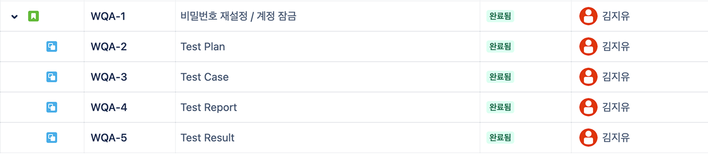
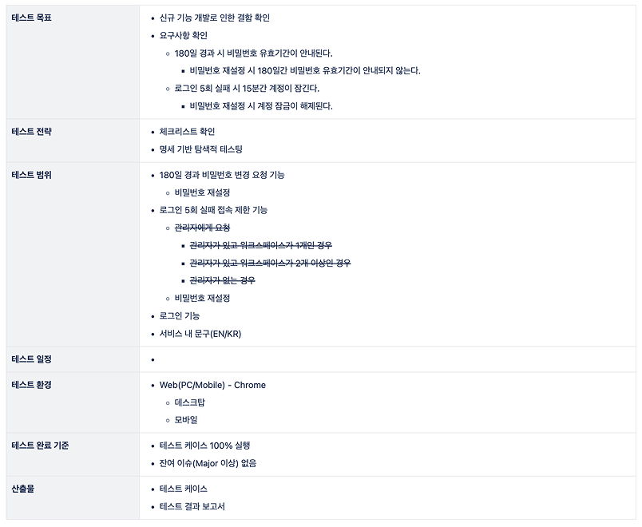
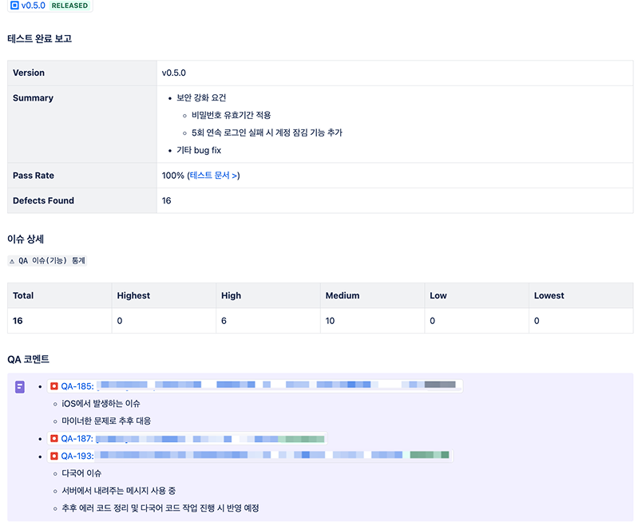
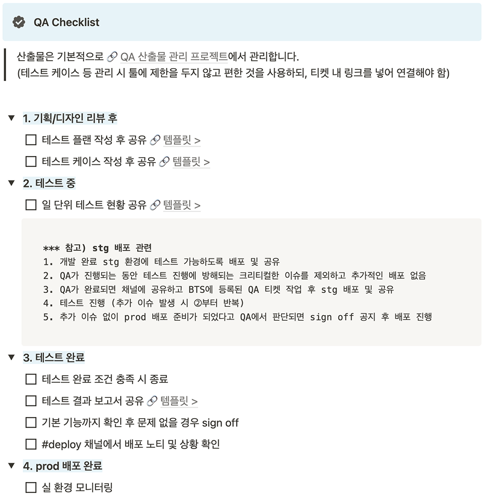
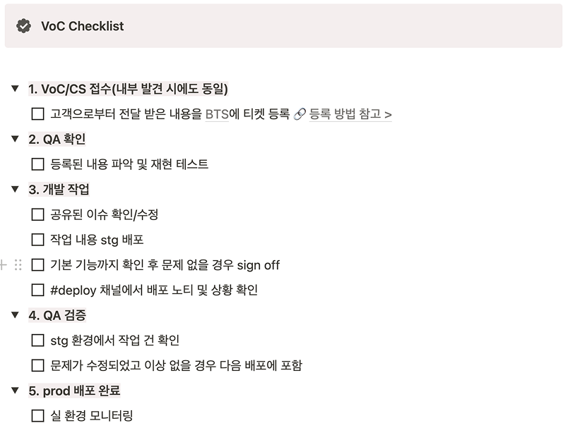

Product Quality
Case.1Product QA
1. 요구사항/정책 리뷰 단계에서 품질 리스크 식별
요구사항과 정책 리뷰 단계에서 누락된 조건, 예외 시나리오, 사용자 영향도를 먼저 검토해 개발 이전에 품질 리스크 식별(Shift-left)
- QA 관점에서 요구사항과 정책 검토, 누락된 조건과 예외 시나리오 정리
- 사용자 영향도와 리스크 수준을 기준으로 검증 우선순위 산정
- 릴리즈 전 제품 조직이 판단할 수 있도록 품질 리스크와 검증 결과를 정리하여 공유
- 반복 확인이 필요한 핵심 유저 플로우는 P0 회귀 테스트 세트로 분리해 릴리즈 검증 기준으로 활용
🔍접근
요구사항 확인정책, 화면, 운영 조건을 함께 확인
리스크 도출누락 조건, 예외 시나리오 및 사용자 영향 검토
범위 조정릴리즈 일정과 영향도에 따라 테스트 우선순위 설정
공유제품 조직에 릴리즈 판단에 필요한 품질 리스크 공유
| 리뷰 | 항목 | 체크 사항 |
|---|---|---|
| 사용자 상태 | 로그인 여부, 권한 유무, 권한 변경 여부 상태가 정의되어 있는가? | 접근 가능 조건 확인 |
| 정책 조건 | 명확한 제한 조건, 만료 조건, 예외 조건이 있는가? | 누락 정책 확인 |
| 결제/금액 | 결제 성공 후 권한 또는 재화가 정상 부여되는가? | 사용자 피해 방지 |
| 실패 케이스 | 실패/취소/중단 시 사용자가 이해할 수 있는 안내가 있는가? | UX/CS 리스크 확인 |
| 릴리즈 리스크 | 이번 릴리즈에서 반드시 확인해야 할 핵심 항목은 무엇인가? | 검증 범위 조정 |
⛳결과
| 리스크 발견 시점을 앞으로 | 구현 후 테스트 단계가 아닌 기획/정책 리뷰 단계에서 먼저 확인 |
| 테스트 우선순위를 명확하게 | 사용자 영향도와 리스크 수준을 기준으로 릴리즈 전 반드시 확인해야 할 영역 정리 |
| 릴리즈 의사결정 지원 | 제품 조직에 릴리즈 전 품질 상태와 잔여 리스크 공유 |
| 핵심 플로우를 기준으로 | 릴리즈 검증 기준으로 P0 회귀 테스트 세트 활용 |
2.도메인 정책과 플랫폼 조건이 복잡한 기능 검증
- 라프텔(OTT): 사용자의 결제/멤버십 상태, 콘텐츠 판권 등 이용 정책, 프로필 상태, 연령 제한, 기기/플랫폼 조건 등
- 비스테이지(SaaS): 사용자의 결제/멤버십 상태, 권한 유무 및 사용자가 직접 설정하는 다양한 설정값과 다국어
→ 라프텔과 비스테이지 모두 정책과 권한 검증이 중요
- 멤버십, 포인트, 구매 제한, 권한 복원처럼 결제 이후 실제 이용 권한과 연결되는 플로우 검증
- 테스트 포인트로 판권 만료, 프로필 상태(활성/잠금 여부), 본인 인증, 연령 제한과 같이 OTT 도메인 정책과 사용자 상태가 결합된 조건 정리
- 콘텐츠 다운로드/오프라인 재생, 동시 재생 제한, DRM, TV 앱, 모바일 앱과 같이 플랫폼별로 다르게 발생할 수 있는 리스크 검증
- 비마이프렌즈에서는 설정형 Web(빌더) 기능과 라이브(영상통화 및 채팅) 기능에서 데이터 조합, 외부 SDK와의 연동, 앱 상태 전환 리스크 등 검증
대표 사례
라프텔 멤버십 권한
- IAP 결제, 멤버십 업/다운그레이드, 포인트 이용, 권한 복원, 구매 제한 등 비즈니스적으로 가장 중요한 영역을 우선순위 높여 검증
- 결제 성공 후 실제로 이용 권한이 정상 부여되는지, 권한 없는 상태에서 우회하여 이용할 수 없는지, 결제 상태와 서비스 이용 권한이 어긋나는 경우가 없는지 확인
라프텔 OTT 콘텐츠 정책
- 판권 만료 콘텐츠 노출, 시즌/회차 이동, 구매 버튼 노출, 콘텐츠 접근 가능 조건 검증
- 판권, 회차 이동, 구매 버튼 노출처럼 콘텐츠 이용 정책이 화면과 재생 플로우에 일관되게 반영되는지 확인
- 콘텐츠 다운로드 및 오프라인 재생, 동시 재생 제한, 재생 오류 케이스 플랫폼별 검증
라프텔 플랫폼 안정성
- 모바일 앱, 웹, TV 앱에서 크래시, 무한 로딩, 빈 화면, 오프라인 재생 실패 확인
- 모바일 앱과 TV 앱처럼 사용 환경이 다른 플랫폼의 성능/접근성 리스크 검토
- 사용자 접근 불가 혹은 즉시 이탈로 이어지는 문제는 릴리즈 리스크로 분리하여 공유
라프텔 프로필/사용자 상태
- 프로필 잠금, 프로필 삭제/수정, 콘텐츠 이용 연령 제한 관련 플로우 검증
- 사용자 상태에 따라 접근 가능 여부가 달라지는 기능은 정책 조건이 화면과 기능 동작에 일관되게 반영되는지 확인
- 사용자 상태가 변경된 후 상태에 맞는 화면이 노출되고 정의된 시나리오가 진행되는지 확인
비스테이지 Brand Custom(웹 빌더)
- 고객사가 섹션과 템플릿을 조합해 브랜드 페이지를 커스텀하는 기능 검증
- 섹션 순서 변경 시 데이터가 섞이는 문제, 기본 언어 값 누락 시 저장되지 않는 문제 등 데이터와 정책이 결합된 이슈 발견
- 다국어, 옵셔널 필드, 섹션 최대 복제 수, 마이그레이션 데이터 유실 가능성을 주요 테스트 포인트로 도출
비스테이지 POP(실시간 소통)
- 1:N 양방향 라이브/채팅 기능을 iOS/Android 환경에서 검증
- Sendbird SDK 사용 특성상 재현 경로, 기기 상태, 로그를 함께 정리해 원인 판단에 필요한 정보를 공유
- 라이브 종료 후 토큰 만료, 앱 FG/BG 전환 시 카메라/오디오가 정상 동작하지 않는 이슈 확인
- 재현 빈도가 낮은 문제는 Datadog 로그 기반 이슈 추적
🔍접근
| 구분 | 확인 내용 | 주요 리스크 |
|---|---|---|
| 이용 권한 | 멤버십/포인트 결제 후 권한 부여, 구매 제한, 권한 복원 | 결제 성공 후 권한 부여 실패, 이용 우회(어뷰징) |
| 콘텐츠 정책 | 판권 만료, 회차/시즌 이동, 콘텐츠 접근 가능 조건 | 정책 위반, 만료 콘텐츠 노출, 잘못된 구매 유도 |
| 사용자 상태 | 본인 인증, 성인 여부, 연령 제한, 프로필 상태 | 접근 조건 불일치, 잠금/권한 상태 오류, 빈 화면 |
| 플랫폼 조건 | Web, Mobile App, TV App, 앱 FG/BG, 오프라인 환경 | 플랫폼별 접근 불가, 크래시, 재생 실패 |
| 외부 의존성 | 외부 SDK, 라이브/채팅 상태, 로그 기반 추적 | 원인 판단을 위한 재현 정보와 로그 확보 필요 |
OTT 권한/콘텐츠 정책 검증
| 구분 | 확인 내용 | 주요 리스크 |
|---|---|---|
| 권한 보유/미보유 | 시청 가능 여부, 구매 가능 여부, 권한 복원 | 권한 부여 실패 또는 무권한 접근 |
| 판권 유효/만료 | 재생 여부, 구매, 다운로드 버튼 노출 여부 | 정책 위반 가능성 |
| 프로필 상태/연령 제한 | 콘텐츠 접근 및 재생, 관련 콘텐츠 이용 가능 여부 | 접근 조건 불일치 |
| 다운로드/오프라인 | 다운로드, 만료 정보, 동시 재생 제한 | 플랫폼별 재생 실패 |
플랫폼별 검증
| 모바일 앱 | 티비 앱 |
|---|---|
| 오프라인 재생, PIP 등 사용 환경별 재생 경험 | 리모컨 조작 |
| 인증/권한 상태 변화 | 로딩 시간, 반응 속도 등 성능 |
| 앱 FG/BG 전환 | OS별 콘텐츠 재생 성능 |
⛳결과
| 도메인 정책 검증 | 판권, 프로필, 멤버십, 청소년 보호 등 OTT 도메인 정책 검증 |
| 권한/상태값 검증 | 결제 상태, 멤버십 권한, 프로필 상태, 콘텐츠 상태가 일관되게 반영되는지 확인 |
| 플랫폼별 리스크 반영 | Web, Mobile App, TV App, 온/오프라인 환경에서 다르게 발생할 수 있는 이슈 확인 |
| 재현 정보와 로그 공유 | 외부 SDK가 연동된 기능에서는 이슈 현상, 재현 경로, 기기 상태, 로그를 함께 정리해 원인 파악에 필요한 정보 공유 |
AI-assisted QA
Case.2AI를 활용한 업무 효율화 및 자동화
요구사항 리뷰, 테스트 실행 관리, 이슈 추적, 결과 리포팅 과정에서 단순 반복을 줄이고 리스크 판단에 더 집중할 수 있도록 QA 업무 개선
- Spec 기반 AI 리뷰 프로세스를 설계하고, 산출물을 QA 검토용 테스트 플랜 초안으로 활용
- Spec 업데이트 시 QA 채널에 변경 알림과 리뷰 요청이 발송되도록 해 요구사항 변경에 대응
- 스프레드시트 기반 테스트 실행 결과와 Jira 이슈 정보를 연결해 이슈 리포팅과 트래킹 개선
- 반복 검증이 필요한 핵심 유저 플로우를 웹 E2E 테스트 자동화 대상으로 선정해 운영
🔍포인트
Spec 작성PM이 기능 정책 및 요구사항 작성
변경 알림저장소의 스펙 업데이트 시 채널로 알림
AI 리뷰테스트 조건, 핵심 정책, 예상 리스크 초안 추출
QA 검토누락 조건과 우선순위 보완 & PM 확인 요청
| 산출물 | 내용 | QA 검토 포인트 |
|---|---|---|
| 테스트 조건 초안 | 요구사항에서 파생 가능한 정상·예외 조건 | 누락 조건, 우선순위, 사용자 영향도 보완 |
| 핵심 정책 정리 | 기능 동작에 영향을 주는 정책 조건 요약 | 정책 모호성, 예외 조건 확인 |
| 테스트 플랜 초안 | 검증 범위, 예상 리스크, 우선순위 정리 | 릴리즈 일정과 리스크 수준에 맞게 조정 |
⛳진행 결과
- 기능별 평균 40~50개 수준의 테스트 조건 초안 확보
- AI-assisted QA 도입으로 약 1일 소요되던 테스트 조건 초안 작성을 1시간 수준으로 단축
- 확보한 시간을 고위험 정책과 예외 조건 검토에 재투입
- 스프레드시트와 Jira 정보를 연결하고 대시보드 형태의 테스트 리포트를 생성하는 내부 도구 설계
- 정기·비정기 서버 배포 전 100개 이상의 핵심 P0/P1 자동화 테스트를 실행해 반복 회귀 검증에 활용
QA Process
Case.3QA 프로세스 구축과 개선
QA 프로세스 구축
1. 개발 조직의 첫 QA로 합류 후 QA 프로세스 설계 및 문서화





QA 프로세스 개선
2. 스쿼드 단위로 빠르게 배포하고 실험하는 제품 운영 방향에 맞춰 배포 프로세스 재설계
- 라프텔(APP/WEB)
- 2개 이상의 스쿼드 작업을 모아 통합 빌드 준비
- 통합 빌드 검증 후 배포 → 월 1회 배포 가능 수준
- 비즈니스 전략이 바뀌고 빠른 실험이 필요해진 상황
- MAU 230만 이상의 서비스인 만큼 자주 빠르게 배포하면서도 일정 수준의 퀄리티는 반드시 확보되어야 함
🔍AS-IS
- 스쿼드 검증 → 통합 검증 → 배포
- 여러 스쿼드의 변경 사항을 모아 통합 검증 후 배포
- 통합 빌드 기준으로 QA가 전체 변경 사항을 모아 검증
- 특정 스쿼드 검증 지연 시 환경 점유 문제로 전체 배포 일정이 딜레이
- 스쿼드 검증 후 통합 빌드에서 다시 한 번 스쿼드 검증 진행
- 통합 검증 단계에서 여러 변경 사항을 한 번에 확인하는 리스크
- QA 리드타임이 길어지고 속도가 느린 문제
- 1개 뿐인 테스트 환경
- 제한된 QA 환경을 여러 스쿼드에서 함께 사용
- 핫픽스, 라이브러리 업데이트, 단발성 요청 작업도 일반 배포와 섞일 수 있음
- 긴 검증 리드타임
- 2인 기준 약 1주 소요
- 느린 배포 주기
- 월 1회 수준 통합 배포
⛳TO-BE
- 스쿼드 단위 검증 → P0 기본 기능 체크 → 배포
- 스쿼드 단위로 빠르게 배포한 뒤 결과 확인
- 각 스쿼드에서 PM/PD/QA/FE 단위로 배포 범위 완결
- 스쿼드별 검증과 배포를 분리하여 병렬 진행 가능해짐
- 스쿼드 검증 중복 실행 차단(리소스 절감)
- 배포 슬롯제와 제출 간격 기준을 정의하여 병렬 배포 과정의 머지 충돌과 배포 리스크 관리
- QA 환경 확장 및 스쿼드별 환경 점유 룰 정리
- feature/dev/qa/production으로 분리, 스쿼드 병렬 개발을 위해 feat/qa 5까지 확장하고 점유 환경 관리 규칙 정의
- 핫픽스, 라이브러리 업데이트, 단발성 요청 작업은 일반 스쿼드 배포와 별도 분리
- 검증 리드타임 단축
- 1인 기준 규모에 따라 1~3일 수준
- 빠른 배포 주기
- 주 1~3회 스쿼드 단위 배포
- 1:1 대화형 모바일 서비스(iOS/Android)
- 코어에 집중한 기능 위주로 스펙을 최소화하여 런칭 목표로 개발 중인 상황
- 애자일 프로세스(*1주 단위 스프린트 배포) 내에서 iOS, Android 빌드 각각 검증 필요
- 대화 서비스이므로 대화방을 생성한 쪽과 입장한 쪽으로 나눠 검증
- 테스트 기간: 1~2일
- 테스트 인원: 1명
🔍AS-IS
- 스프레드 시트로 작성된 마일스톤 공유 방식으로 이루어진 개발 일감, 일정 산정
- 기능 개발 진척도를 한눈에 파악하기 어려움
- 문서 관리의 번거로움
- Slack, Notion, Jira 등 개별 채널에서 각각 배포/관리된 기획 산출물
- 파편화되어 추적이 어렵고 번거로워 팀 내에 공유가 제대로 이뤄지지 않았음
- 버그 리포트 시에도 스펙 논의 등으로 유관자들 사이 티켓이 왔다갔다하며 시간이 낭비되는 경우 빈번
- 명세 기반 사전 작성한 테스트 케이스 기반 테스트 수행
- 아직 구현되지 않은 기능이 많아 N/T, N/A 항목 다수 존재
- 테스트 범위가 넓어져 테스트에 소요되는 시간이 길어짐(제한된 리소스)
⛳TO-BE
- 스크럼 도입 제안(Jira 활용)
- 칸반 보드 및 워크플로, 스토리 포인트 등 세팅 후 티켓으로 개발 일감 관리
- 완료된 일감, 지연된 일감 등 보드를 통해 개발 진척도를 한눈에 파악 가능
- 팀 구성원들의 일감도 함께 공유되어 각자의 작업 현황 파악 용이
- 일감과 관련된 이슈를 연결할 수 있어 보다 편한 관리
- 스프린트 시작 시 등록한 티켓(개발 일감) 확인, 테스트 범위를 좁혀 테스트 기간 단축
- 기획 산출물 배포 채널 또한 Jira로 통일
- 하위 일감을 아우르는 티켓 내에서 업데이트된 정책과 과거 산출물 추척 가능
- 테스트 케이스 대신 스프린트에 등록된 티켓(개발 일감)을 활용한 탐색적 테스트 수행
- 실제 구현된 기능 위주로 테스트할 수 있게 됨
- 이전보다 빠른 테스트 가능
- TC 작성에 쓰던 시간을 API 테스트 또는 핵심 기능 검수에 활용할 수 있게 됨
Team Leading
Appendix팀 리딩 및 매니징
- QA/CX 팀 리더로서 OKR 수립, 우선순위 조정, 리소스 배분 수행 및 구성원 성장 지원
- 프로덕트팀 위클리와 QA 스터디를 운영해 업무 현황, VOC 이슈, 자동화 진행 상황 공유
- QA/CX 역량 모델과 레벨별 성장 기준을 정의하고, AI-native 로드맵 수립
- 개인별 역량 매핑과 피드백 리뷰를 통해 팀원별 성장 과제 및 레벨업 행동 구체화
- 주니어 QA 온보딩과 자동화 업무 위임을 통해 독립적인 스쿼드 참여 및 E2E 자동화 주도 지원
- VOC가 QA 검증 기준과 제품 개선으로 이어지도록 QA-CS 품질 루프 구축 추진